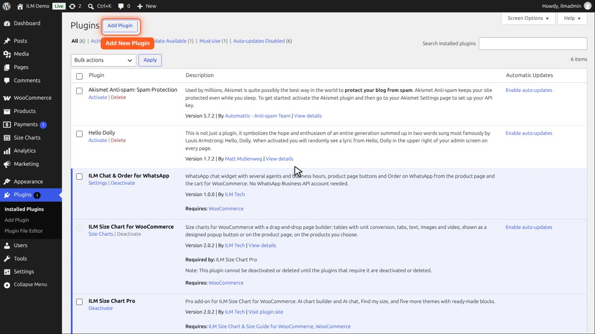
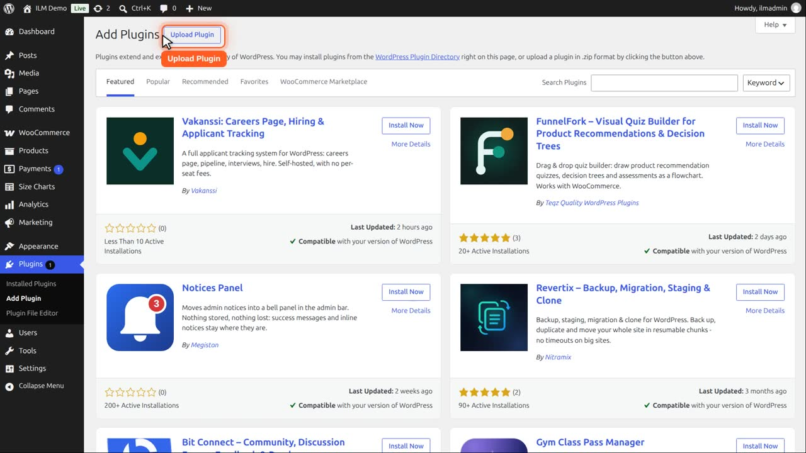
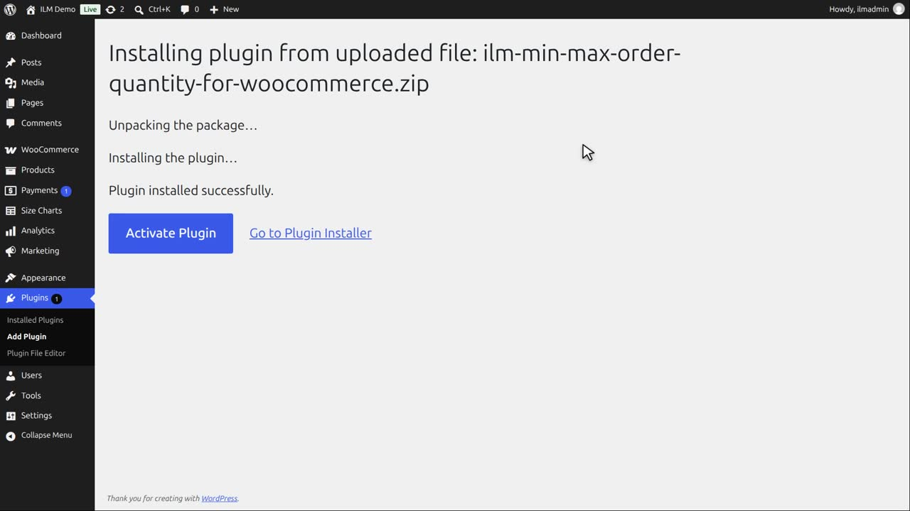
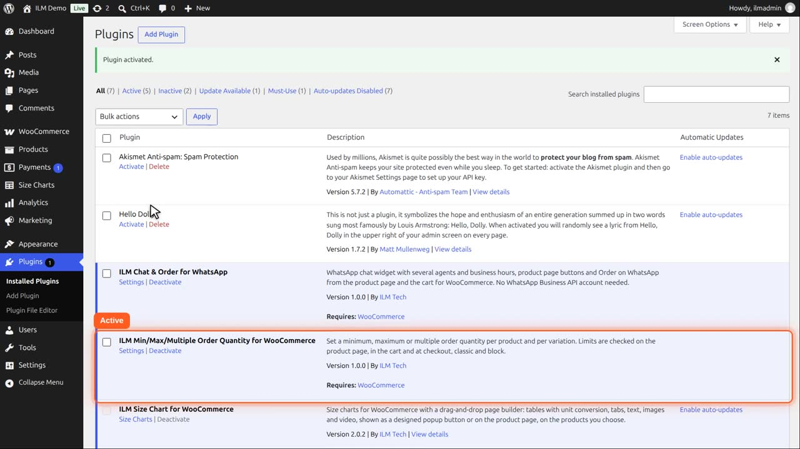
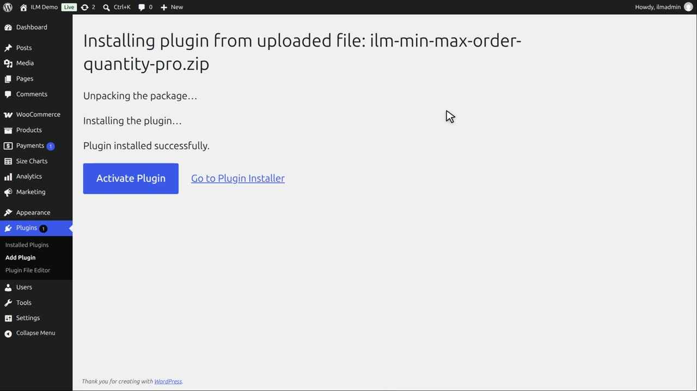
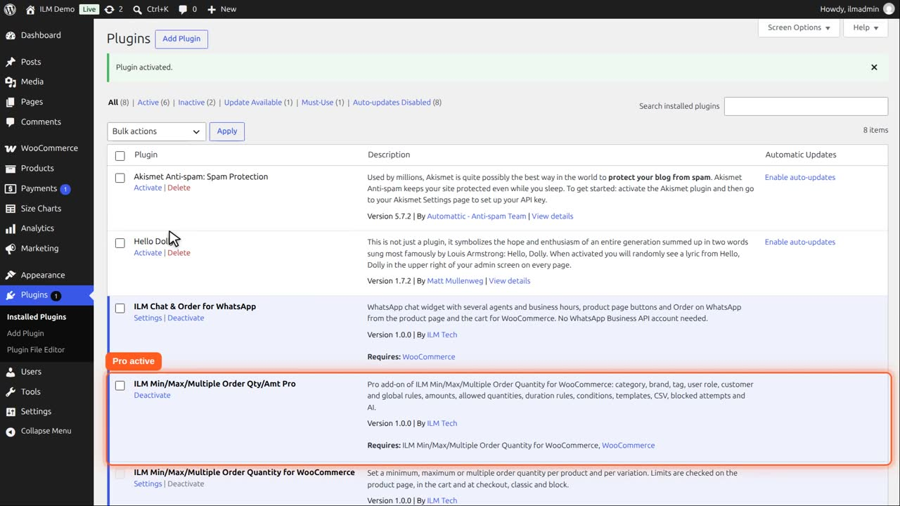
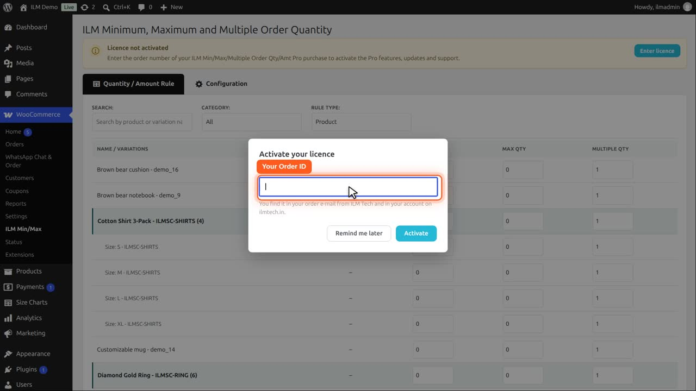
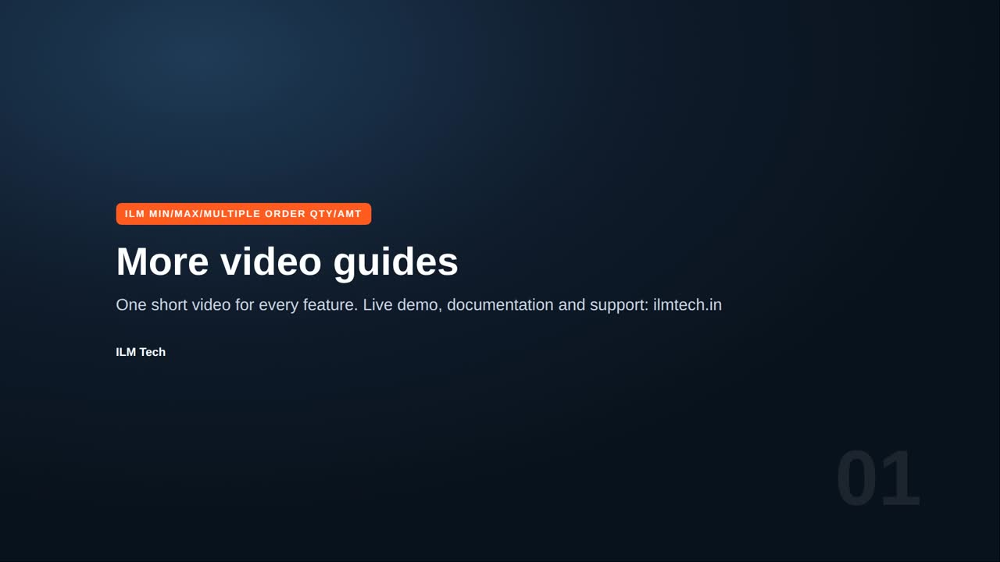

In your WordPress admin, go to Plugins > Add New Plugin > Upload Plugin, choose the zip file, click Install Now and then Activate Plugin. WooCommerce must be installed and active. The plugin then sits under WooCommerce > ILM Min/Max.
The Pro add-on needs the free plugin. Buy it on the Pro product page on ilmtech.in; the zip is on the order page and in your order e-mail. Install its zip file the same way, then open WooCommerce > ILM Min/Max and enter the order ID from your ilmtech.in order e-mail in the licence window. The licence turns on the Pro features, updates, support and the AI. Remind me later closes the window, and the bar keeps the Enter licence button for later.
Upload the new zip the same way and choose Replace current with uploaded. Your rules and settings are kept.
In WordPress admin, open Plugins. Click Add New Plugin.

Here we install the free plugin from its zip file with Upload Plugin.

Choose the zip file and click Install Now. WordPress uploads it and says: plugin installed successfully.

Click Activate Plugin. The free plugin is active: product minimum, maximum and multiple quantities, with ILM Min Max under the WooCommerce menu.

The Pro add-on, from ilmtech.in, is installed the same way: Add New Plugin, Upload Plugin, choose its zip, and Install Now. Pro adds amounts, category, brand, tag, role and global rules, durations, templates and the AI Assistant.

Activate it. To upgrade later, upload the new zip the same way and choose Replace current with uploaded: your rules and settings are kept.

Open WooCommerce, ILM Min Max. Pro asks for your licence: paste the order ID from your ilmtech.in order e-mail and click Activate. It turns on the Pro features, updates, support and the AI.

Remind me later closes the window. The bar keeps the Enter licence button for later.
